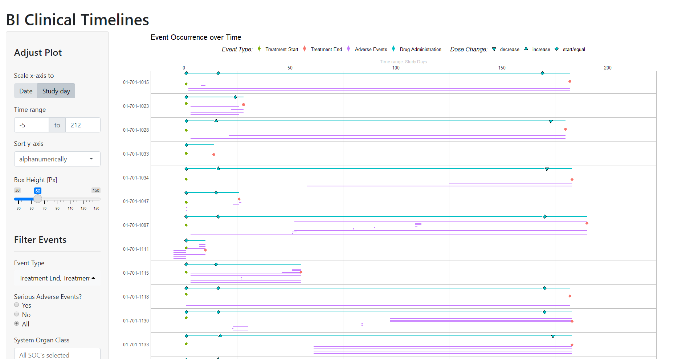

The Clinical Timelines module from DaVinci’s {dv.clinlines} package displays subject level data over time to present dates and/or time intervals of pre-specified events, like adverse events, concomitant medications, randomization dates, and more. Events to show can be chosen as needed. Periods of drug administration are displayed in a special way, indicating dose changes. The module offers an overview of events of all subjects.

For adverse event data, supplementary local filters can be added.
The module is prepared to be used in combination with DaVinci’s {dv.manager} package and supports its bookmarking functionality. It also allows to enable communication with other DaVinci modules for drilling down to particular subjects (in this case, communication means to send a unique subject ID).
Installation
Feel free to copy the following code chunk to install the latest version of {dv.clinlines}.
if (!require("remotes")) install.packages("remotes")
remotes::install_github("Boehringer-Ingelheim/dv.clinlines")Example
{dv.clinlines} provides a mock function to launch the module with dummy data from the {pharmaverseadam} R package for demonstration purposes:
dv.clinlines::mock_clinical_timelines_app()To launch the Clinical Timelines module with your data using {dv.manager}, add the module to your module list. The code below shows an example definition of a one-item module list. The setup of the mapping parameter concludes in a plot that shows Treatment Start and Treatment End Points, as well as Adverse Event and Drug Administration periods.
See vignette("clinlines") for further information on how to use {dv.clinlines} with {dv.manager}. Usage of helper and default functions are also explained there.
module_list <- list(
"Clinical Timelines" = dv.clinlines::mod_clinical_timelines(
module_id = "mod1",
basic_info = list(
subject_level_dataset_name = "adsl",
trt_start_var = "TRTSDT",
trt_end_var = "TRTEDT",
icf_date_var = "RFICDT"
),
mapping = list(
adsl = list(
"Treatment Start" = list(
start_dt_var = "TRTSDT",
end_dt_var = NULL,
start_dy_var = NULL,
end_dy_var = NULL,
detail_var = NULL
),
"Treatment End" = list(
start_dt_var = "TRTEDT",
end_dt_var = NULL,
start_dy_var = NULL,
end_dy_var = NULL,
detail_var = NULL
)
),
adae = list(
"Adverse Events" = list(
start_dt_var = "AESTDTC",
end_dt_var = "AEENDTC",
start_dy_var = NULL,
end_dy_var = NULL,
detail_var = "AEDECOD"
)
)
),
drug_admin = list(
dataset_name = "exp",
trt_var = "EXTRT",
start_var = "EXSTDTC",
end_var = "EXENDTC",
detail_var = "EXTRT",
label = "Drug Administration",
dose_var = "EXDOSE",
dose_unit_var = "EXDOSU"
)
)
)